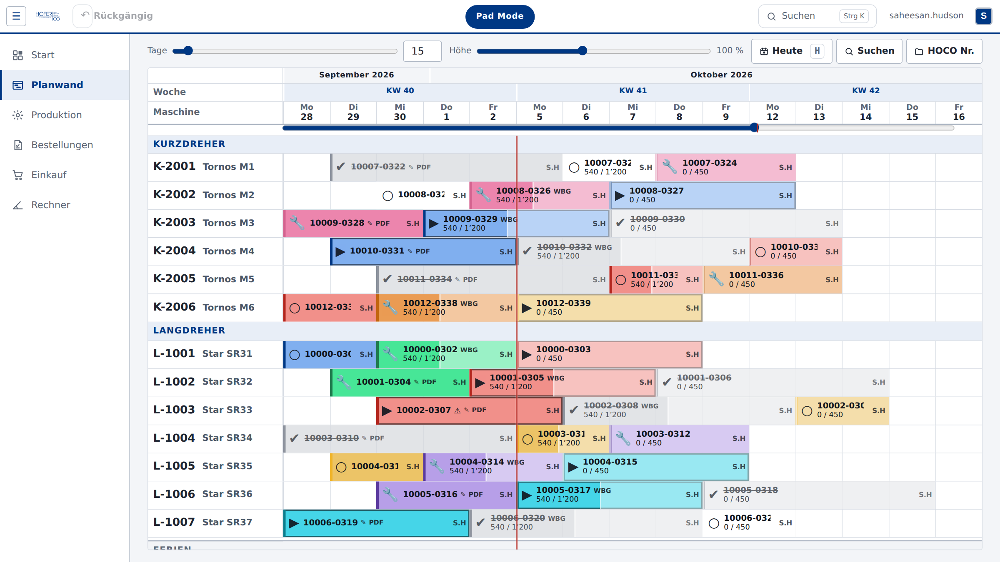
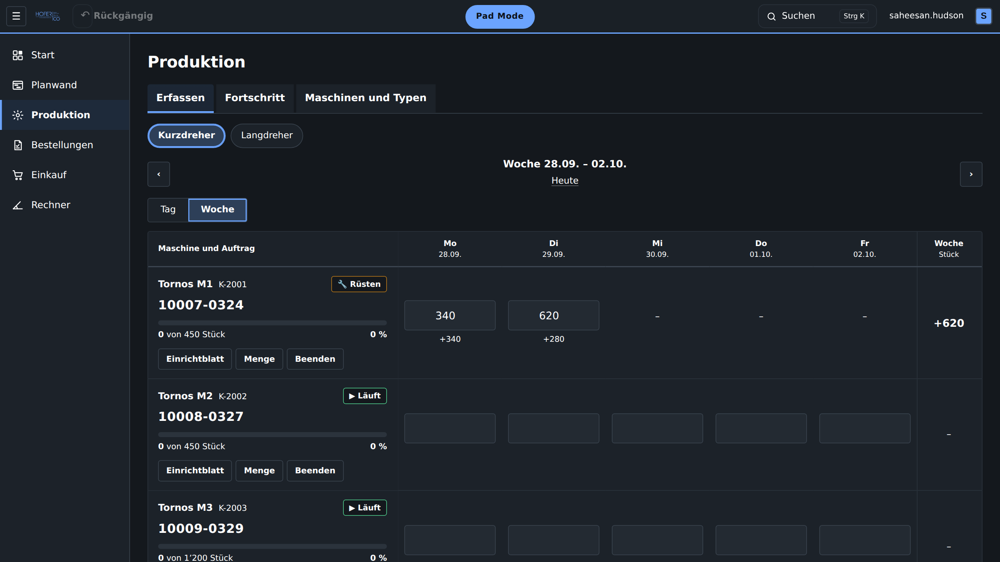
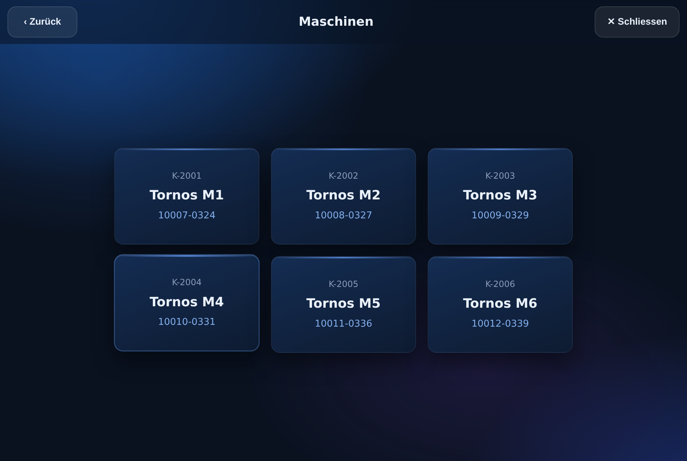
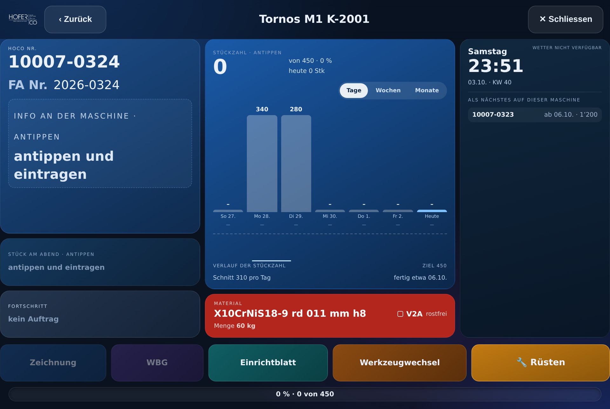

Hofer Tool
Die Werkstatt-App von Hofer + Co.
01 · Planwand
Alle Aufträge auf einen Blick.
Ziehen, verschieben, und die anderen weichen von selbst aus.
hofertool / planwand

02 · Produktion
Stückzahlen live erfassen.
Jede Maschine, jeder Tag, jede Woche.
+0
Stück diese Woche
hofertool / produktion

03 · Pad Mode
Gebaut für das Tablet an der Maschine.
Grosse Kacheln, Zeichnung und Einrichtblatt mit einem Tipp.


Und vieles mehr
Alles an einem Ort.
Bestellungen
Einkauf
Rechner
G-Code
Dokumente
Notizen
Solaranlage


Hofer Tool
Präzision seit 1928, jetzt auch im Büro und an der Maschine.